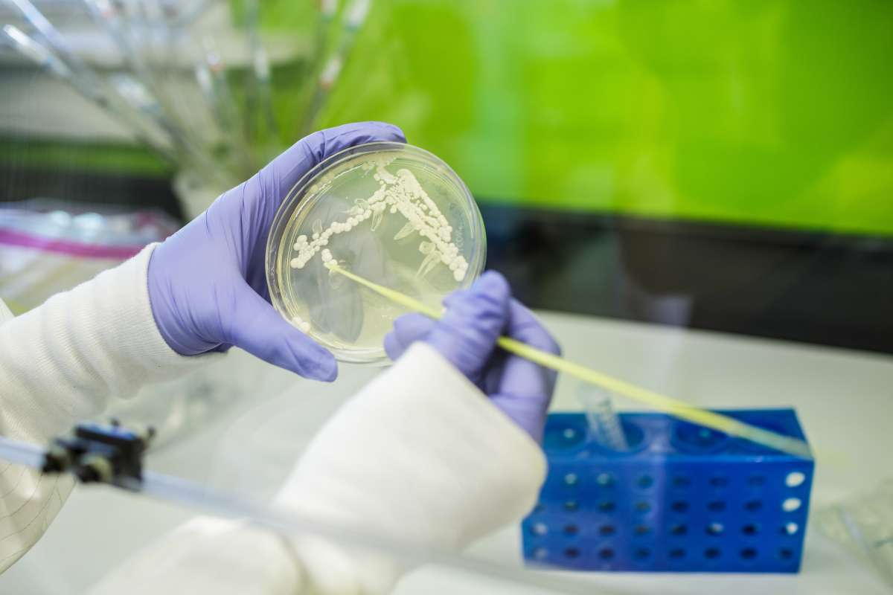

About Me

Research fields: Multiomics data analyses, Exerkine Translational Research, Bioinformatics, Computational and Systems Biology
Current Mission: Learn advanced bioinformatics, computational multiomics, and data analysis in the GTEx and the MoTrPAC Data Hub for the purpose of mapping exerkines to support human health, resilence, and disease prevention. I have construct networks, find the patterns of important connections in the network analysis of exerkine data. I inquiry genotype-to-tissue gene expression and carry that onward to phenomic (genotype-to-phenotype) analysis of tissue interactomes. I'm analyzing the multi-omics of rodents and humans and will map exerkines at transcriptome, proteins, metabolites and lipids level. These exerkines are to be mapped across all organs in the rat and relevant human organs while keeping focused on the endurance exercise training in rodents. In this way, the molecular map of exercise can proceed on it’s way to be made to understand how physical activity improves human health.
Positions
- Graduate Research Student (Snyder Lab)
Stanford Genome Technology Center (SGTC)
Department of Genetics
Stanford University School of Medicine
Department of Biological Sciences, Califonia State University, East Bay
- Volunteer Neuroscientist and Neurosurgery Researcher (Steinberg Lab)
Department of Neurosurgery
Stanford University School of Medicine
Research Interests
- Precision Medicine, Clinical Science and Biomedical Research
- Multiomics analysis and network physiomes
- Biochemistry and Molecular Biology
- Computational Systems Biology
- Structural Biology
Education
Graduate Studies
The Snyder Lab, Department of Genetics, Stanford University School of Medicine
M.S. Biological Sciences: Computational Multiomics and Bioinformatics (Anticipated December 2024)
California State University, East Bay, CSUEB, 2022 - Present (Anticipated 2024)
Fundamentals of Data Science in Precision Medicine and Cloud Computing
(Certificate Pending) |
Stanford Deep Data Research Center | Stanford Data Ocean
Stanford Medicine | Department of Genetics
Structural Biology and Chemical & Systems Biology Graduate Intern, Summer 2022
Stanford Cancer Institute Stanford Medicine
Integrative (Bulk, Spatial & Single-cell biology) Multiomics and Translational Medicine Graduate Training: Courses & Workshops
Stanford Genetics Conference on Structural Variants and DNA Repeats (SVAR23)
Computational Biology + Spatial Biology
2023
2nd Annual Spatial Biology Workshop (Angelo Lab)
Stanford School of Medicine, Li Ka Shing Learning and Knowledge Center (LKSC)
- Cell Detection and Classification
- Applications of Spatial Biology I & II
- De Novo Mass Spectrometry
- The Scientific Spectrum of Spatial Analysis
- Workshop: H&E bootcamp
- Follow-up virtual-learning
2022
- CSU Northridge Data Driven Discovery of Computational Biology and Modern Molecular Biology
Structural Biology
Cryo-Electron Microscopy and Tomography (3DEM & SPT)
- BioE 320 - Biological cryogenic microscopy and tomography
Stanford | Bioengineering
Schools of Engineering & Medicine
- 2023 Image Processing Workshop for Cryo-Electron Microscopy
S2C2 | Stanford-SLAC Cryo-EM Center | SCSC Sample Preparation for Cryo-Electron Tomography
- 2023 Tomography and Cryo-FIB Workshop
UW-Madison | Midwest Center for Cryo Electron Tomography (MCCET)
- CEMRC Dragonfly Practical Workshop: Application to Tomography Data
Penn State College of Medicine | UW-Madison CEMRC and MCCET
- 42nd Steenbock Symposium: “Opening the Doors to Cryo-EM"
UW-Madison, Department of Biochemistry, UW-Madison Cryo-Electron Microscopy Research Center (CEMRC) and Midwest Center for Cryo Electron Tomography (MCCET)
Macromolecular Crystallography (MX)
- RapiData 2023 at SSRL | Certificate
Structural Molecular Biology (SMB) Division | Macromolecular Crystallography
Stanford Synchrotron Radiation Lightsource (SSRL)
Neurosciences & Neurovirology
- TRMD 607 - Neurovirology, CMB 606 - Neurosciences
Department of Tropical Medicine, Medical Microbiology, and Pharmacology (TRMD)
Department of Cell & Molecular Biology (CMB)
John A. Burns School of Medicine , JABSOM, 2012 - 2013
Department of Neurology and Neurosurgery
Richard T. Johnson Division of Neuroimmunology and Neurological Infections
Johns Hopkins University School of Medicine, JHUSOM, 2012
Undergraduate
B.S. Biology: Cell and Molecular Biology
San Francisco State University, SFSU, 2020 - 2022
Molceular Cell Biology
University of Hawaii at Mānoa, UHM, 2010 - 2013
Ohlone College, 2008 - 2015
Modesto Junior College, MJC, 2003 - 2009
Google Scholar
Research: Projects
Lectures: Presentations
Research

Project IV: Mapping Exerkines Network Physiomes from MoTrPAC and GTEx in Human and Rats
Topic: Endurance Exercise Training (EET) in Young Rats and Translational Human Biology
Major: Computational Multiomics and Bioinformatics
Thesis Lab: Professor and Chairman, Dr. Micahel P. Snyder
Timeline: Present - December 2024
Stanford Genome Technology Center (SGTC)
Department of Genetics, Stanford University School of Medicine
Department of Biological Sciences, California State University, East Bay
Project III: Virophysics (Computational Structural Predictions) and Organelle Structural Biology
Institutions: SLAC National Accelerator Laboratory, Stanford University, California State University, East Bay
Theme: This research project focuses on exploring the field of virophysics with an emphasis on computational structural predictions. Additionally, the project delves into organelle structural biology to understand the intricate architecture of cellular components and its implications in various physiological processes.
Summary: The project involves the application of computational methods to predict the structural dynamics of viral components, contributing to the field of virophysics. Simultaneously, the investigation into organelle structural biology aims to unravel the complexities of cellular structures and their roles in health and disease. The project integrates experimental and computational approaches to advance our understanding of virus-host interactions and cellular architecture.
Publications
- Gómez DJ*. (2023) 'Untangling the Microscopic World of Organelles, Cells, Tissues, and Organs: A Focus on the Dysfunctional Golgi Apparatus in Disease Research †'. Biology and Life Sciences Forum.
- Gómez DJ*. (2022) 'Unraveling the Structural Dynamics of Human Pegivirus-1 RNA-Dependent RNA Polymerase Using Computational Methods'. ResearchGate.
- Gómez D*. (2022) 'Pioneering Organelle Structural Biology: Golgi Apparatus Dysfunction in Parkinson’s Disease, Neurodevelopmental Disorders, and Cancer'. Preprints. 2022100383.
Project II: Coinfections and Cancer: Host-Pathogen Interactions in Dendritic Cells and the Host-Virus-Tumor Interface
Institutions: Drexel University School of Medicine, California State University, East Bay
Theme: This research project focuses on investigating the mechanisms of host-pathogen interactions in the context of disease development. The project involves both experimental and computational methods to illustrate the molecular and cellular basis of disease pathogenesis.
Summary: The research project encompasses several posters and publications that highlight different aspects of host-pathogen interactions and organelle dysfunction in disease research. The posters presented at the Microbiology Student Group Symposium and the AACR-JCA Joint Conference focus on co-infection and cancer, specifically the role of viral oncogenesis in liver, blood, and brain cancer by host-pathogen interactions.
The publications delve into the co-infection and cancer in dendritic cells as well as other oncogenic viruses.
The project aims to advance our understanding of the coinfection and cancer mechanisms underlying their disease development and to identify potential targets for therapeutic intervention.
Posters
- Gómez DJ* . 22nd Microbiology Student Group Symposium Poster / Poster presentation at 22nd Annual Microbiology Student Symposium in Krutch Theater at Clark Kerr UC Berkeley Campus (2023, In-person)
- Gómez DJ, Mulherkar T, Sandel G, Jain P.* "Co-infection and cancer: Viral oncogenesis in humans result in liver, blood, and brain cancer by host-pathogen interactions" Poster presentation at 12th Annual AACR-JCA Joint Conference. (2022, Virtual)
Publications
- Gómez DJ+, Mulherkar T+, Sandel G, and Jain P*. (2022) 'Co-Infection and Cancer: Host–Pathogen Interaction between Dendritic Cells and HIV-1, HTLV-1, and Other Oncogenic Viruses'. Viruses.
Project I: Undergraduate Research Opportunities Program (UROP)
Institutions: John A. Burns School of Medicine, University of Hawai'i at Mānoa
Title: Interleukin-17 Production in CNS by Infiltrating T Cells and Glial Cells in the HIV-1-Infected Brain
Summary: Despite effective combined anti-retroviral therapy (cART) for HIV-1-infected individuals, neurocognitive complications persist in patients, leading to negative impacts on daily functioning. The central nervous system (CNS) is affected in multiple ways during HIV infection, as HIV-infected cells cross the blood-brain-barrier (BBB) and initiate events causing CNS damage and neurocognitive problems. This study aims to investigate the role of interleukin-17 (IL-17) in HIV-associated neurocognitive disorders (HAND), as IL-17 can disrupt the BBB. The researchers will analyze brain specimens and cerebrospinal fluid (CSF) samples from HAND patients with HIV encephalitis (HIVE) and compare them to samples from HIV-infected individuals with normal cognition (NC). The hypothesis is that IL-17A will be found in subcortical structures, specifically in the medium-spiny neurons of the basal ganglia and interneurons in the hippocampus, and that astrocytic secretion of the TH17 cell chemokine (CCL20) and cytokine (IL-17) will be detected in CSF samples of HAND patients with HIVE.
Proposal
- Gómez DJ*, Shiramizu, B. (2013) 'IL-17 in HIV-1-Infected CNS'. 28 Mar. 2013. JABSOM, UH Mānoa, Honolulu, HI. TRMD499: Directed Research and Reading.
Volunteer Researching
[Summer 2022 - Present] Virtual Volunteer Associate Fellow, Microbiology & Immunology, Drexel College of Medicine
[Spring 2014] Research Assistant, Anesthesia, UC San Diego School of Medicine
[Fall 2020] Research Assistant, Physiological Sciences, UF College of Veterinary Medicine
Presentations
Lecture videos
Presentations
Gene Editing, Therapy & Genome Engineering
Computational Biology + Molecular Biology
Upcoming: Precision bioinformatics
- Advancing Your Expertise: Bioinformatics Training for NGS and Single-Cell RNA Sequencing
- Expanding Horizons: Bioinformatics Training for Mass Spectrometry and Spatial Biology
- Advancing Healthcare: Bioinformatics Training for Precision and Preventative Medicine
Structural Biology
Cancer Neuroscience & Tumor Virology
Gallery

Contact
Email:
gomezscientist0@gmail.com
Address:
3165 Porter Dr, Stanford, CA 94304


.jpg)


.png)